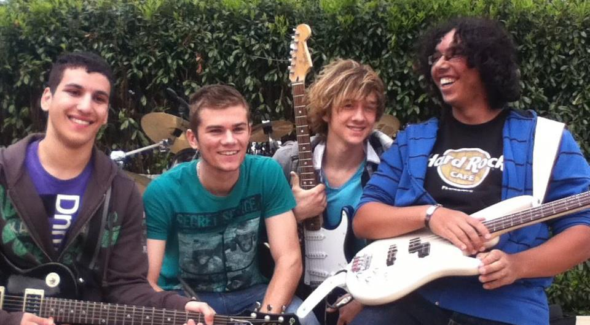

J'ai commencé la musique par le saxophone. A l'age de 15 ans, la guitare fut une révélation. J'ai suivi des cours particulier pendant 4ans, avant de continuer seul. S'en suivi l'apprentissage de la basse, puis de la batterie en autodidacte.
2 formations à mon actif :
Blast Wave (2008-2010, 15 concerts)
Guitariste et Back Vocals
PunkCake (2011-2013, 4 concerts)
Bassiste et Lead Vocals PunkCake sur youtube


Blast Wave, concert Externat Sainte-Marie La Verpillière
PunkCake